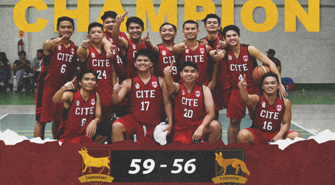

The CITE Oxen dethroned the CBEAM Foxes in the Men’s basketball tourney, 59-56, at the Sports Complex, Oct 20. With a 16 point lead, the Oxen rampaged the court headed by Brylle Louie Bautista and Vincent Louie Andal, shortly after Von Ryan Tumambing was ejected in the ballgame. After the first half, the Foxes devoured the Oxen in a 10-1 run with Edward Kenneth Castillo executing flashy plays, Juan Miguel Olmos draining his three-pointer and Nikole Angelo Chua directing the offensive end, 28-38.
However, CITE’s Val Phrixus Abueg charged to close in the gap by finishing his fast break opportunities. In addition, Ron Nichole Opelanio’s tenacity in rebounding and converting second-chance opportunities into points ended the third quarter with a four point deficit, 40-44. CBEAM’s Jan Andre Estolano answered back by surging the hard court with his fast break plays, 45-50. However, the relentless Oxen maintained their teeth clenched towards the championship as they continued to run their offenses through Abueg’s lightning fast break finish. In addition, they fortified their defenses by marking Castillo and eventually contained him scoreless on the fourth quarter to cut the lead to two, 53-55.
With a remaining 1.98 secs in the regulation Oxen Opelanio successfully laid in his clutch shot forcing an overtime, 55-55. Opelanio lifted the men in red throughout the overtime period as he delivered four points including his off-the-spin lay-up and sunk free throws, 59-56.
CITE dedicated their victory to their teammate playing in his last year. “May isa kaming team mate na ga-graduate. Gusto namin bago s’ya umalis ay makamit ulit namin ang championship [title],” said Opelanio. CBEAM and CIHTM-CON emerged as 1st runner-up and 2nd runner-up in the tourney, respectively.

Red Oxen Reclaim Basketball Supremacy
Written by on